P a s t E x h i b i t i o n s
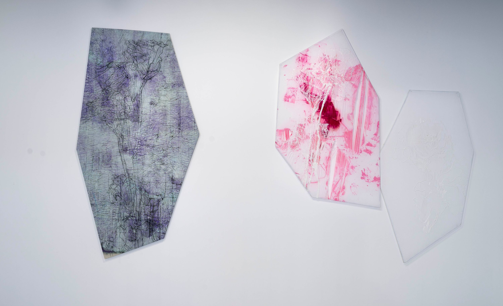
個展「胞膜 houmaku」
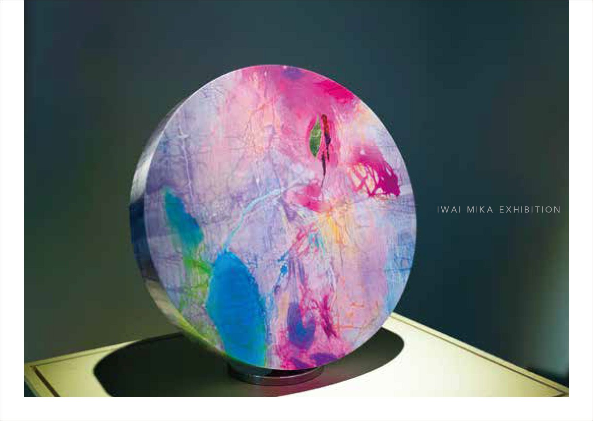
個展「岩井美佳 展
-みちる花 FLOWER'S JOURNEY-」
-みちる花 FLOWER'S JOURNEY-」
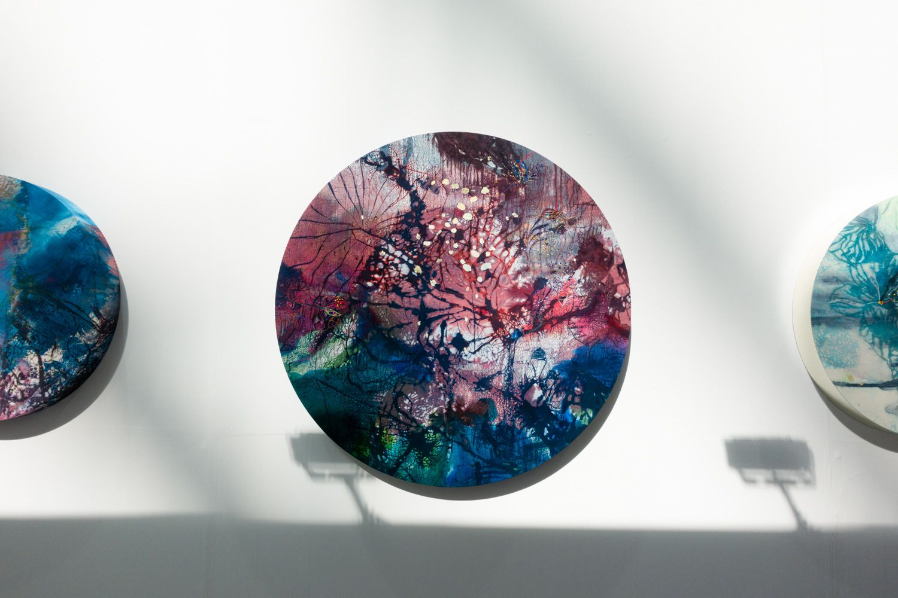
アートフェア東京 2023
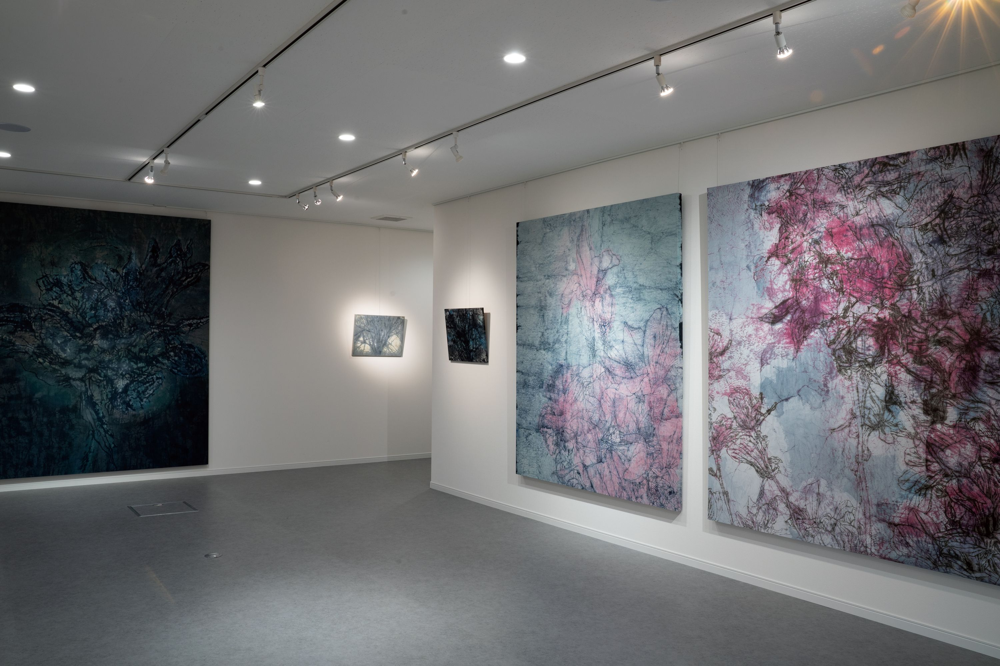
個展「染む記憶 線刻糊防染による記憶の表現」
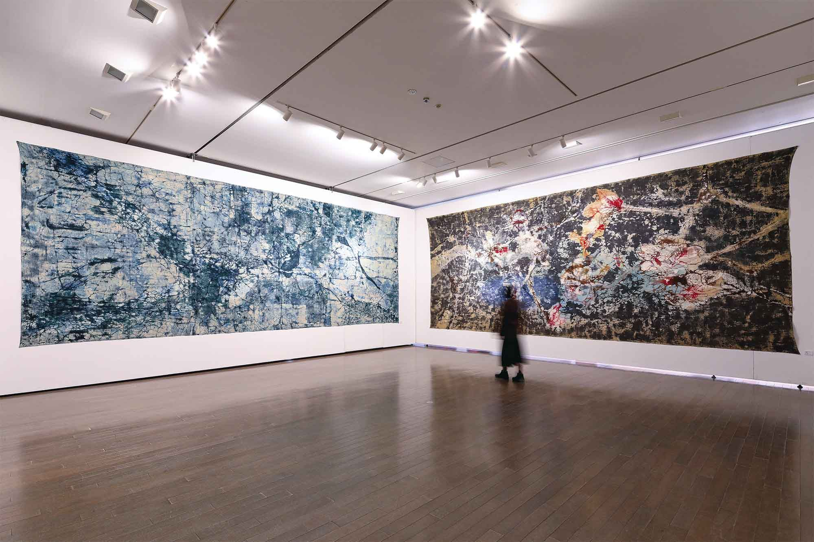
金沢美術工芸大学 第23回 大学院博士後期課程研究発表展

金沢市民芸術村3工房合同企画
岩井美佳「100色の絞り染めに挑戦！」
岩井美佳「100色の絞り染めに挑戦！」
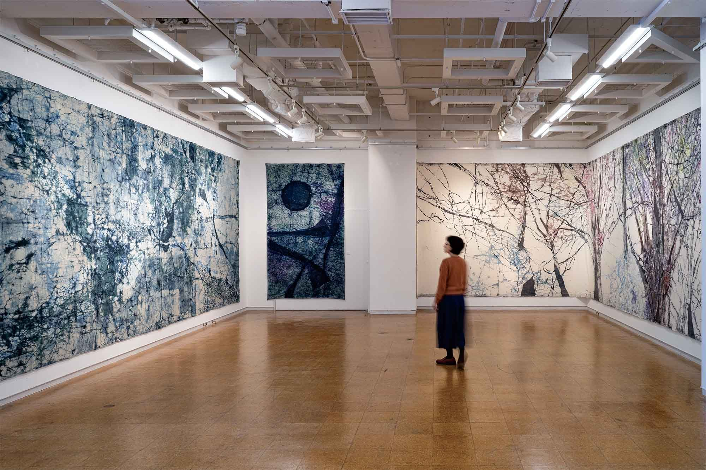
金沢美術工芸大学博士課程 学内展示「線刻糊防染による記憶の表現」
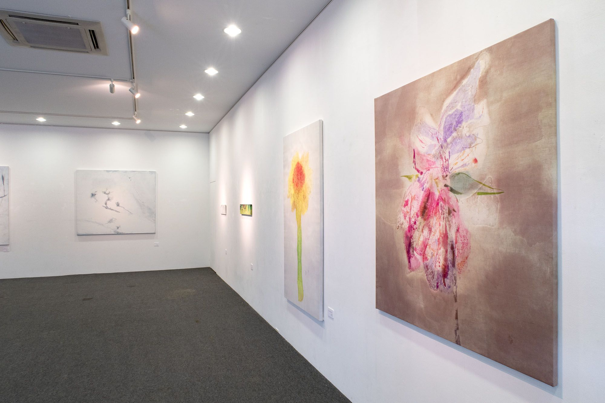
個展「染む・記憶」
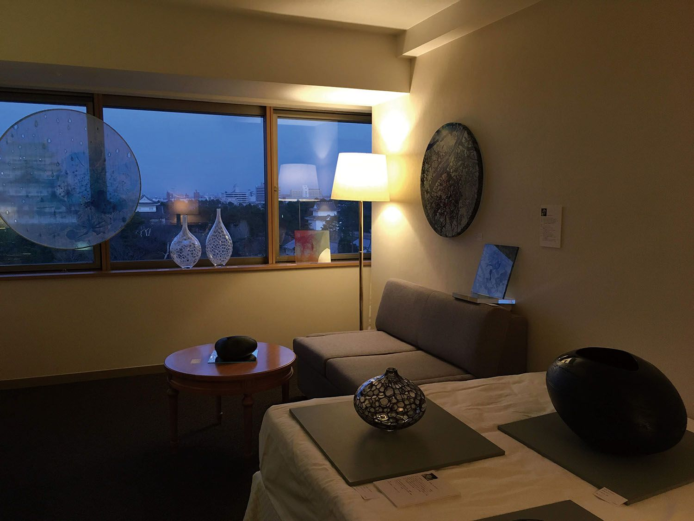
ART NAGOYA 2020
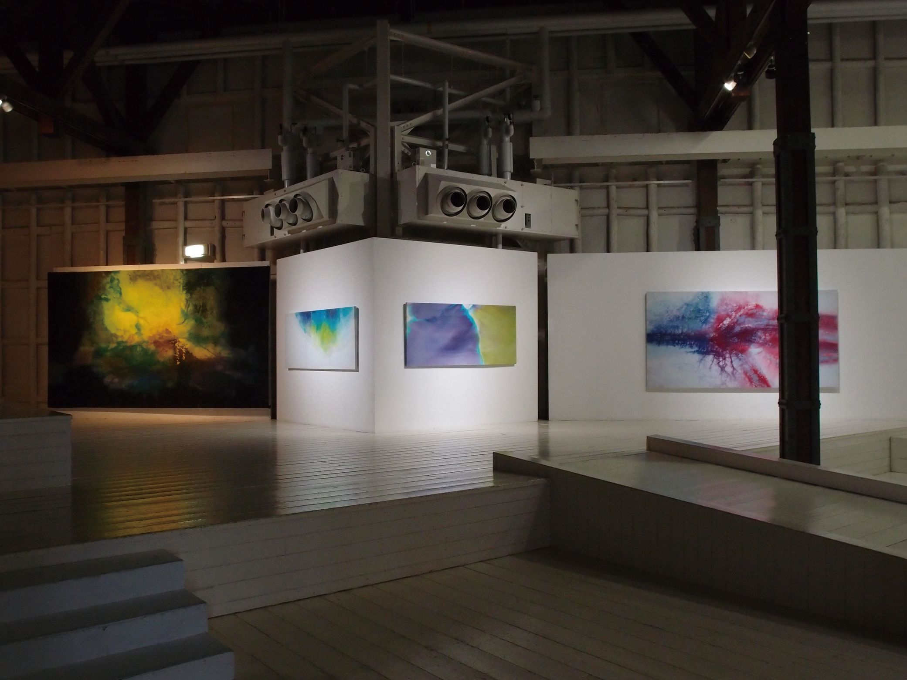
個展「#assenble_moments」
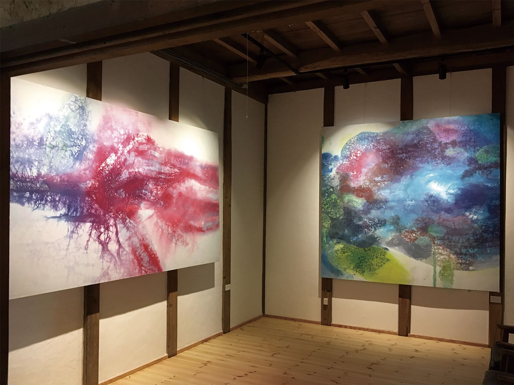
「染め・時間の堆積」展
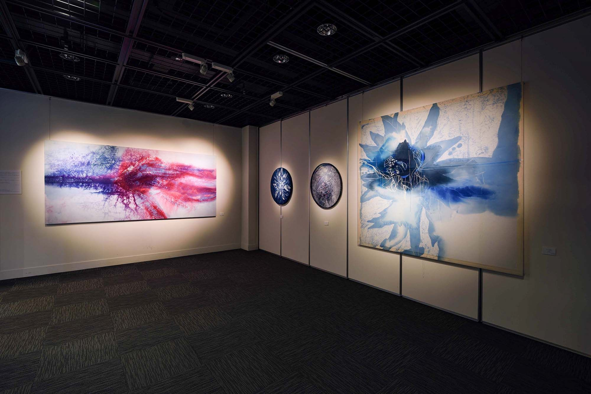
金沢美術工芸大学 平成30年度 博士後期課程1年 研究制作展「port Report」
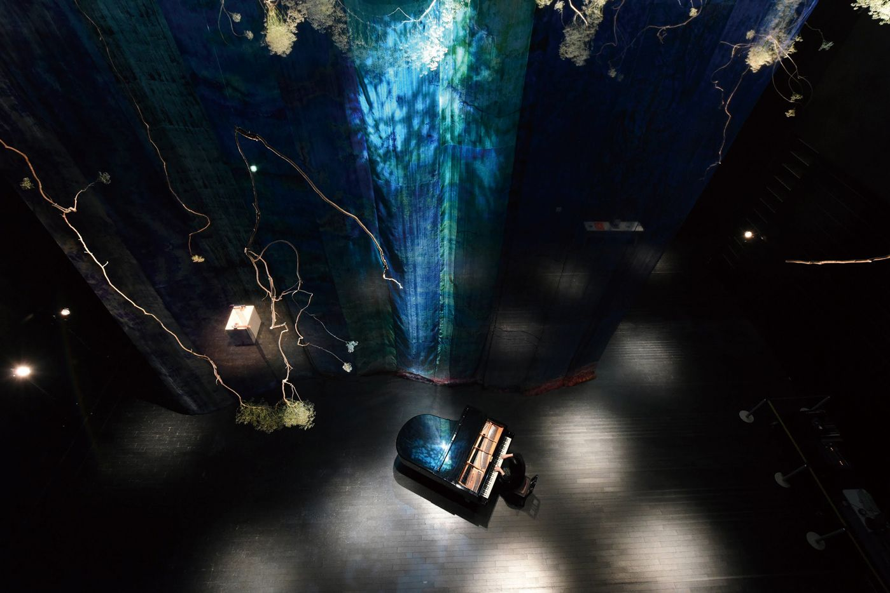
銀河音楽室
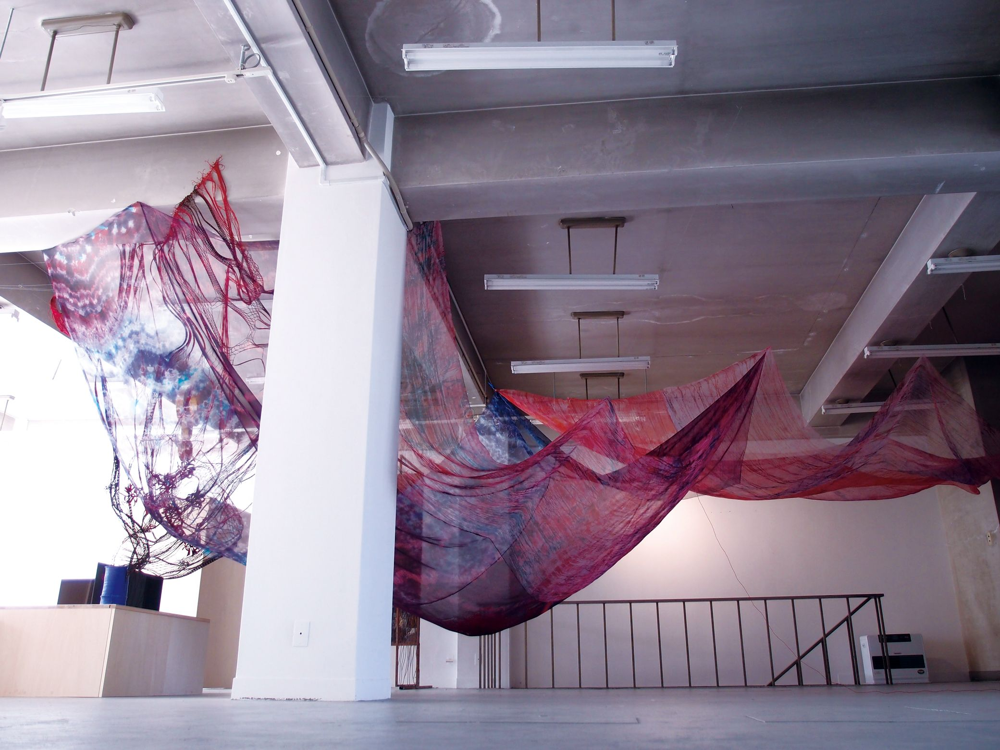
問 × 美 2017
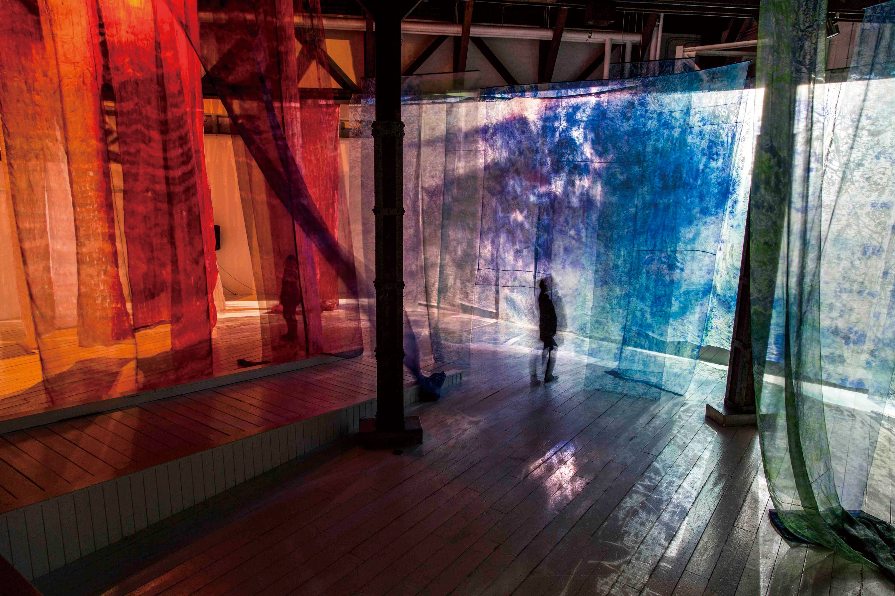
VISUAL SONIC 2016 Inner Flower, Inner Happening
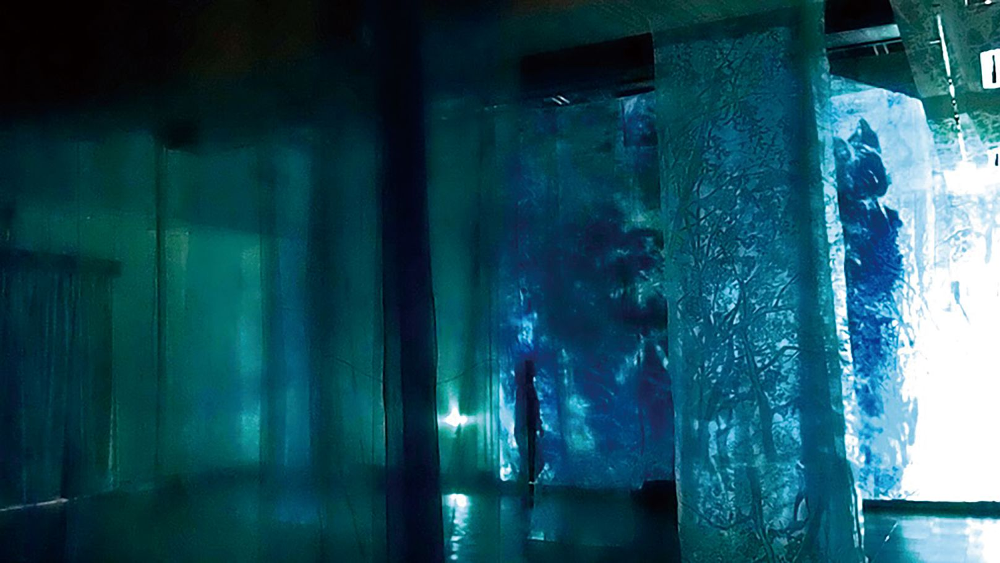
個展「浮遊するリアル」